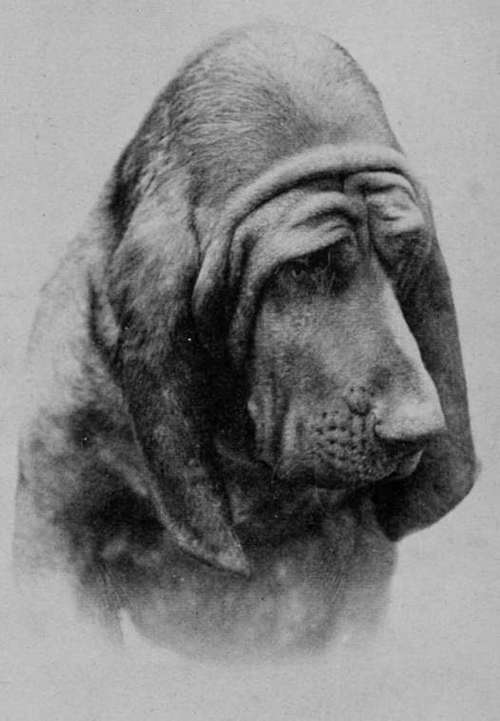
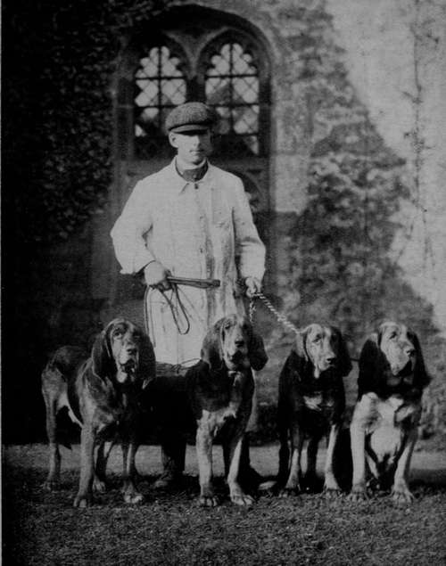

Section C. Hounds. Chapter IX. The Bloodhound
Description
This section is from the book "Sporting Dogs. Their Points And Management In Health, And Disease", by Frank Townend Barton. Also available from Amazon: Sporting Dogs; Their Points and Management in Health and Disease.
Section C. Hounds. Chapter IX. The Bloodhound
For several centuries at least, the Bloodhound has existed as a distinct variety of the canine race. According to Jesse, the earliest mention of Bloodhounds was during the reign of Henry III., and that the breed originated from the Talbot, brought over by William the Conqueror, and very similar to a breed from St Hubert's Abbey and Ardennes, which, according to the old legends, was imported by St Hubert, from the south of Gaul, about the sixth century.
The Talbot was the popular Hound from the twelfth to the sixteenth century, becoming extinct about the end of the last century.
"The Southern Hound, another very old breed, showing many characteristics of the Bloodhound, is difficult to find now in his pure state, although many old packs of Harriers have descended chiefly from Southern Hounds. The best authorities agree that the St Hubert, Talbot, and Bloodhound are all closely allied".
The foregoing is an extract from the Century, by E. Brough.
These Hounds were used by Henry VIII. in the wars in France ; by the Spaniards in Mexico, and by Queen Elizabeth against the Irish.
One of the most remarkable features of the Bloodhound is found in his abilities to track the footsteps of strangers, but in towns and cities he is quite useless for this purpose.
Within recent years, these Hounds have frequently been employed with the object of tracking a criminal, and in some instances, we believe, with very satisfactory results.
In appearance the Bloodhound has a very stately bearing, and usually of a kindly disposition.
On the hunt their music is deep and bell-like.
Although generally of good constitution, Bloodhound puppies are very troublesome to rear, distemper being the scourge to which most of them succumb.
For the photograph of the beautiful quartet, the author is indebted to Mrs Chapman of Thrapston, and to this lady, and Mr Fall for the lovely picture of the head of Champion Sultan.
Head of Bloodhound Champion Sultan.
Photo by T. Fall, Baker St.] [Frontispiece.
The points of the Bloodhound are as follows:—
1. Head
This is characteristic.
The skin covering the forehead and cheeks is heavily wrinkled, the more so the better. Reference to the picture showing the head of Sultan shows the remarkable expression in this region.
A Quartet of Typical Bloodhounds (the Property of Mrs Chapman, Thrapston).
The occipital dome is high but not wide, and very round. At the top it forms a peak.
The nasal surface, i.e., from eyes to nose, is very long, so that from peak to nose it may measure as much as a foot. The brows are prominent; the flews very long—sometimes a couple of inches—and the nostrils large and well dilated.
Eyes
Small, hazel in colour, deeply sunk, and should show a great deal of " haw," i.e., the membrana nictitans, or third eyelid. These features are very characteristic of the Bloodhound.
Long ears, thin, soft to the feel, set on low down, hanging close to cheeks, and meeting, when pulled together, over the nose.
The facial expression ought to appear quick and penetrating.
2. Legs And Feet
There must be plenty of bone and muscle here; strong knees ; straight and round well-formed, cat-like feet.
3. Chest And Shoulders
Width and fair depth are desirable, the shoulder being very strong, the arm also strong.
4. Neck
A long neck is essential, and the dewlap should be well developed.
5. Ribs, Back And Loin
Well-sprung ribs, with a wide back, of moderate length, and strong loins.
6. Hind Quarters And Limbs
There should not be much more than skin, bone, and muscle in these regions. The hocks are strong and coarse. Must not be cow-hocked.
7. Tail
Gay carriage as in other Hounds. At rest tail is down.
8. Coat And Colour
black-and-tan. The black hair is generally blended with the tan, and this ought to be of a deep red. Some Hounds are tan-coloured only. Lion colour uncommon, but coveted. The body coat short and hard, but on the ears, and head, fine and soft.
Height
For dogs, about 2 ft. 3 in.; bitches, 2 ft. (measured at shoulder).
Club
Bloodhound Breeders' Association, particulars of this being given.
Continue to: